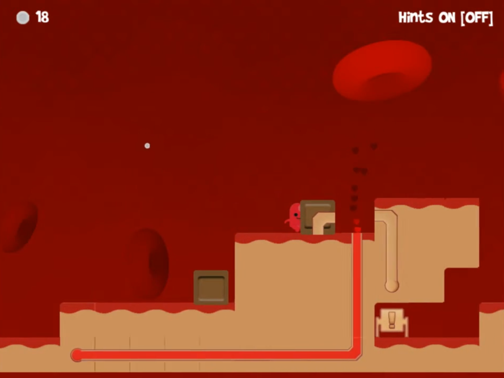
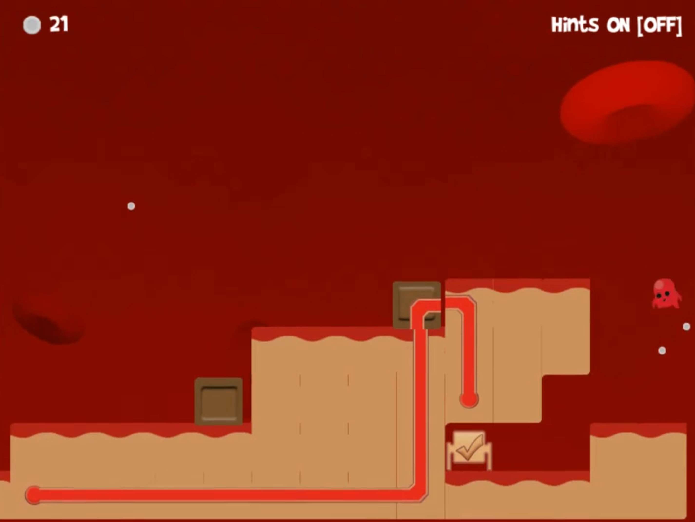

Early tutorial language
Puzzle 1 introduced interaction prompts, movement timing, basic object manipulation, and signposting. It succeeded in teaching players isolated actions.
Puzzle 2 introduced advanced movement and advanced manipulation of objects. It succeeded in chaining these two concepts together.
Puzzle 3 introduced 3 different types of projectiles (Black, Blue, and Green), basic throwing mechanics, 1 type of destructible block (Green), 1 enemy type (Green enemy), and basic combat. It was supposed to teach the player the differences in the types of projectiles available and the first type of danger.
Puzzle 4 attempted to chain previous lessons together in a confined and concise puzzle.